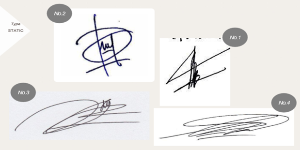

Tipe Statis

Pemilik Tanda tangan Tipe Statis ini cenderung berpusat pada masa kanak-kanak, terutama pada pilar ibu atau ayah. Individu cenderung belum terindividuasi, maksud belum terindividuasi dalam kamus besar bahasa Indonesia adalah proses melemahnya keterikatan pada kelompok sehingga terdapat individu yang kurang kuat ketaatannya pada kelompoknya atau berkembang sendiri secara terpisah
Tipe Repetitif

Tanda Tangan tipe Repetitif ciri-cirimya adalah Tanda tangan ada yang diulan-gulang: pemilik tanda tangan tipe ini memiliki cara merespon dunia sama meskipun situasi dan konteks kejadiannya berbeda. Meski lebih menyadari siapa dirinya tetapi terjebak dalam pola hidup, sikap dan kebiasaan yang terbentuk sejak kecil. Sebagian fungsi ego dasar ada yang kuat, dan sebagian fungsi ego turunan ada yang kuat dan ada yang lemah.
Tipe Dinamis

Maksud Tanda Tangan Tipe Dinamis adalah Menyadari adanya kesadaran dan ketidaksadaran; pemilik tanda tangan tipe dinamis relatif mampu berubah dan berkembang sesuai dengan situasi dan kondisi yang dihadapinya atau mencapai morphogenesis (baca : tingkat kematangan/kedewasaan seseorang). Psikodinamikanya positif. Fungsi ego dasar cenderung kuat, tetapi mungkin ada satu-dua fungsi ego turunan yang lemah.
Tipe Gabungan

Sebagian orang mempunyai gabungan dua atau tiga tipe. Sebutkan tipe pada masa kanak-kanak dahulu, kemudian tipe di masa kini dan masa depan. Misalnya, Statis-Repetitif-Dinamis. Penting untuk menyimak apakah pada masa kini tipenya dinamis atau tidak. Maka, analysand yang “Statis-Dinamis-Repetitif” memiliki kepribadian yang lebih positif daripada “Dinamis-Statis-Repetitif” yang cenderung saat ini malah mengalami regresi.